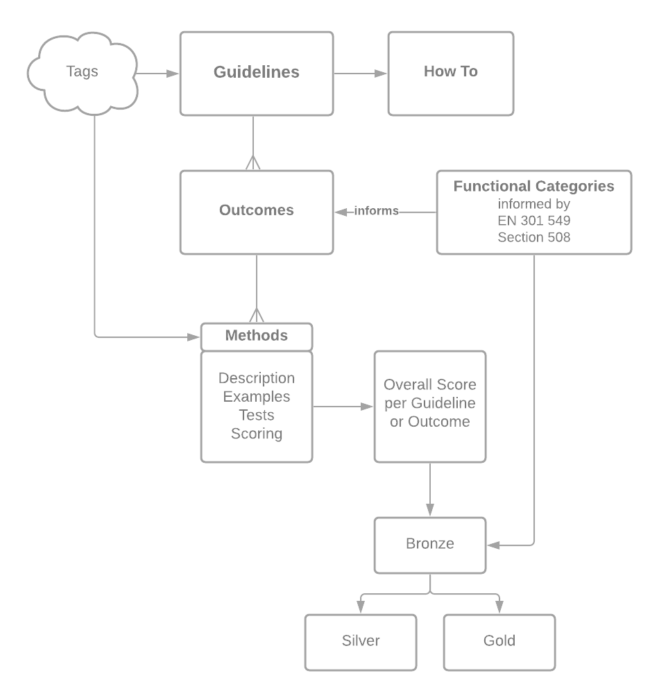

W3C Accessibility Guidelines (WCAG) 3.0 provides a wide range of recommendations for making Web content more accessible to users with disabilities. Following these guidelines will address many of the needs of users with blindness and low vision, deafness and hearing loss, cognitive and learning disabilities, limited movement, speech disabilities, photosensitivity, and combinations of these. These guidelines address accessibility of web content on desktops, laptops, tablets, mobile devices, wearable devices, and other Web of Things devices. They address various types of web content including static content, interactive content, visual and auditory media, and virtual and augmented reality. The guidelines also address related web tools such as user agents (browsers and assistive technologies), content management systems, authoring tools, and testing tools.
Each guideline in this standard provides information on accessibility practices that address documented user needs of people with disabilities. Guidelines are supported by multiple outcomes to measure if the need has been met. Guidelines are also supported by technology-specific methods to meet each outcome. This specification is expected to be updated regularly to keep pace with changing technology, both by updating or adding methods and by adding guidelines to address new needs as technologies evolve. For entities that make formal claims of conformance to these guidelines, several grades of conformance are available to address the diverse nature of digital content and the type of testing that is performed.
W3C Accessibility Guidelines 3.0 is a successor to Web Content Accessibility Guidelines 2.2 [WCAG22] and previous versions. They also incorporate content from and partially extend User Agent Accessibility Guidelines 2.0 [UAAG20] and Authoring Tool Accessibility Guidelines 2.0 [ATAG20].
While there is a lot of overlap between WCAG 2.x and WCAG 3.0, WCAG 3 includes additional tests and different scoring mechanics. As a result, WCAG 3.0 is not backwards compatible with WCAG 2.x. WCAG 3.0 does not supersede WCAG 2.2 and previous versions; rather, it is an alternative and more modern set of guidelines. Once these guidelines become a W3C Recommendation, the W3C will advise developers, content creators and policy makers to use WCAG 3.0 in order to maximize future applicability of accessibility efforts. However, content that conforms to earlier versions of WCAG continue to conform to those versions.
This section describes the status of this
document at the time of its publication. Other documents may supersede
this document. A list of current W3C publications and the latest revision
of this technical report can be found in the
W3C technical reports index at
https://www.w3.org/TR/.
Publication as an Editor's Draft does not imply endorsement
by the W3C Membership.
This is a draft document and may be updated, replaced
or obsoleted by other documents at any time. It is inappropriate to cite this
document as other than work in progress.
This document was produced by a group
operating under the
W3C Patent
Policy.
W3C maintains a
public list of any patent disclosures
made in connection with the deliverables of
the group; that page also includes
instructions for disclosing a patent. An individual who has actual
knowledge of a patent which the individual believes contains
Essential Claim(s)
must disclose the information in accordance with
section 6 of the W3C Patent Policy.
This specification creates a new model and guidelines to make web content and applications accessible to people with disabilities. W3C Accessibility Guidelines (WCAG) 3.0 supports a wide set of user needs, uses new approaches to testing, and allows frequent maintenance of guidelines to keep pace with accelerating technology change. WCAG 3.0 continues this evolution by focusing on users’ functional needs. These are then supported by technology-specific methods to meet those needs.
Following these guidelines will make content more accessible to a wider range of people with disabilities. This includes accommodations for blindness and low vision, deafness and hearing loss, limited movement, speech disabilities, sensory disorders, learning disabilities, cognitive disabilities and combinations of these. Following these guidelines will also often make content more usable to users in general as well as accessible to individuals with disabilities.
There are many differences between WCAG 2.x and WCAG 3.x. Content that conforms to WCAG 2.2 A & AA is expected to substantially conform to the minimum conformance level of this new standard but, since WCAG 3.0 includes additional tests and different scoring mechanics, additional work will be needed to reach full conformance. Since the new standard will use a different conformance model, the Working Group expects that some organizations may wish to continue using WCAG 2.x, while others may wish to migrate to the new standard. For those that wish to migrate to the new standard, the Working Group will provide transition support materials, which may use mapping and / or other approaches to facilitate migration.
1.1 Scope of WCAG 3.0
The Silver Community Group and their research partners conducted a year of research which included a literature review as well as interviews, surveys, and self-reporting with people with disabilities, content developers, quality assurance professionals, tool developers, designers and policy makers.
The results are available in The Research Summary Slide Deck. One recurring theme was the popularity and quality of the guidance in WCAG 2.0. Most of the opportunities identified in the research were changes in the structure and presentation of accessibility guidance to:
improve usability — especially for beginners;
support disability needs that cannot be tested by true/false success criteria; and
facilitate maintenance to keep the guidelines more current.
The goal of WCAG 3.0 is to provide information that can be used to improve the accessibility of products on a variety of platforms. WCAG 3.0 uses a model that allows it to address more disability needs than WCAG 2.X, as well as address publishing requirements and emerging technologies such as web XR (augmented, virtual and mixed reality) and voice input. It will also provide non-normative information about the ways web technologies need to work with authoring tools, user agents, and assistive technologies. The WCAG 3.0 model is designed to support better coverage across disabilities and be easier to maintain, so that the new model will be more enduring over time as technologies evolve.
Research and design work performed by the Silver Task Force identified key requirements needed to improve upon the existing WCAG 2.x structure. These requirements shaped the conformance proposal that follows and should be taken into account when evaluating and updating this proposal.
The Requirements for Silver documents the following requirements which are met by this document:
The goal of WCAG 3.0 and supporting documents is to make digital products including web, ePub, PDF, mobile apps, and others more accessible and usable for all persons with disabilities. WCAG 3.0 strives to meet this goal by providing guidance on how to make accessing, interacting with, creating, and publishing content work well for people regardless of ability or disability. The Silver Task Force hopes WCAG 3.0 will make it significantly easier for both beginners and experts to create accessible digital products. While the majority of guidelines need to be written, we seek wider public review on the approach presented here.
2. Structure of these guidelines
This section is non-normative.

Figure 1 Structure of WCAG 3 Guidance
WCAG 3 has several layers and types of content with interrelationships. Figure 1 shows the layers. Functional needs are grouped into functional categories. These combine with guidelines to inform the outcomes. How-to documents are information about the guidelines. Methods are specific to technology and include sections of description, examples, tests, and scoring. The scoring section information is used to calculate the overall score for the optional conformance claim. The score in each functional category as well as an overall score determines conformance at a level of bronze. If bronze level conformance is reached, then scores against holistic tests determines conformance at a level of silver or gold. Tags will be applied to guidelines and methods.
2.1 Functional needs
The development of WCAG 3 guidelines starts with functional needs. A functional need is a statement that describes a specific gap in one’s ability, or a specific mismatch between ability and the designed environment or context. Functional needs are applied to specific topics (for example: contrast, forms, readability, and more) to identify the barriers experienced by people with disabilities. The barriers in these topics inform the outcomes, which state the conditions to test whether the functional needs have been met. Functional needs are documented in the how-tos, supplementary material accompanying the guidelines.
Example: Use without vision.
Editor's note
The work of cataloging functional needs is still in process and will continue after the First Public Working Draft. Those interested can see more information in this draft Google document Functional Needs - Expanded
2.2 Functional categories
Functional categories of disabilities group the functional needs of users with disabilities. Functional categories are used when reporting test results in the optional conformance claim.
Example: Vision and Visual
2.3 Guidelines
Guidelines provide a high-level, plain-language version of the content for managers, policy makers, beginners to accessibility and other individuals who need to understand the concepts but not dive into the technical details. They provide an easy-to-understand way of organizing and presenting the outcomes so that non-experts can learn about and understand the concepts. Guidelines include a unique, descriptive name along with high level plain language summaries that address functional needs on specific topics, such as contrast, forms, readability, and more. Guidelines group related outcomes and are technology-independent.
Example: Use headings, sections, and sub-headings to organize your text.
2.4 How-to information
The How-To content provides explanatory material for each guideline that applies across technologies. This guidance explains how to apply the concepts presented in the guidelines for non-technical readers. This plain language resource includes information on getting started, who the guideline helps and how, as well information for project managers, designers and developers.
Figure 2 Example screenshot of a How-To for Structured Content
The example of a How-To for Structured Content provides basic information organized by tabs to help people get started with accessibility for structured content, plan for implementing accessible structured content across a project, design accessible structured content, and basics for developers new to accessibility of structured content. It also includes information on examples, the outcomes for meeting the guideline, and resources.
2.5 Outcomes
Outcomes are the results of practices that reduce or eliminate barriers that people with disabilities experience. Outcomes form the basis of a flexible and expansive architecture for accessibility guidelines that relates closely to the needs of people with disabilities. Specific tests can be used to assess the accessibility of common technologies and each outcome also includes methods that can be used to assess proprietary and new technologies. Outcomes are designed for developers, testers, and other technical experts.
Outcomes are normative. They are located in the normative section of specific guidelines.
Example: Provides semantic structure that conveys a sense of hierarchy
2.6 Methods
Each outcome has one or more methods. Methods are technology specific or technology agnostic depending on the outcome. When technology specific methods are provided, the outcomes also include one or more methods for use with technology that is emerging, proprietary or does not yet have a method written.
Example: Headings (HTML and ARIA)
Figure 3 Example screenshot of a How-To for Structured Content
The methods include detailed information on techniques to meet the outcome, code samples, working examples, resources, as well as information about testing and scoring.
Tests provide ways to check that methods and techniques have been followed. Tests include step-by-step instructions on evaluating the method based on the technology being used.
Scoring is designed to be flexible in order to allow more functional needs of people with disabilities to be included in the guidelines. Tests can include true /false evaluation or various types of rating scales as appropriate for the outcome and technology. Tests may vary by technology as needed.
Each method includes information on how to score individual instances of the test, and how to score the Outcome in an optional Conformance Claim.
Note
While WCAG 3 Methods have some similarity with WCAG 2 Techniques, they are not the same and are not interchangeable.
2.7 Tags
Tags will be added to WCAG 3.0 to improve findability and usability. For example, tags will be provided for functional categories, technologies, WCAG 2 principles and WCAG 2 success criteria, and others still under discussion.
Editor's note
Tagging is still in process and will continue after the First Public Working Draft.
2.8 Conformance Levels
WCAG 3 has an optional scoring system that can better inform organizations on the quality of their accessibility effort. The optional conformance levels provide a way for organizations to report their conformance in simple manner. The bronze level is based on the score in each functional category and the overall score. Silver and gold levels require conforming at the bronze level plus additional improved usability for people with disabilities.
Editor's note
This first draft focuses on bronze level. Future drafts will have more information on silver and gold levels. We expect that bronze will be similar to WCAG 2 AA, while silver and gold will include more usability-type testing. This is still under development. WCAG 2.x AAA success criteria are generally included in WCAG 3. The design of the scoring model awards more points for implementing the outcomes that come from WCAG 2.x AAA.
3. Normative requirements
The main content of WCAG 3.0 is normative and defines requirements that impact conformance claims. Introductory material, appendices, sections marked as "non-normative", diagrams, examples, and notes are informative (non-normative). Non-normative material provides advisory information to help interpret the guidelines but does not create requirements that impact a conformance claim.
The key words MAY, MUST, MUST NOT, NOT RECOMMENDED, RECOMMENDED, SHOULD, and SHOULD NOT are to be interpreted as described in [RFC2119].
Editor's note
The working group is looking for feedback whether the just the functional outcomes should be normative or whether both the guidelines and the functional outcomes should be normative.
4. Guidelines
The individuals and organizations that use WCAG vary widely and include Web designers and developers, policy makers, purchasing agents, teachers, and students. In order to meet the varying needs of this audience, several layers of guidance are provided including functional categories of disabilities, general guidelines, outcomes that can be tested, a rich collection of methods, and documented common failures with examples, resource links, and code.
Editor's note
The process of migrating information from WCAG 2.x to WCAG 3.0 has just begun. This document presents initial examples of how the structure works. The template for the new content @@NEED NEW LINK TO TEMPLATE@@ presents the skeleton of the architecture and may help. We welcome comments on this.
Editor's note
These are early drafts of guidelines. They are used to illustrate what WCAG 3.0 could look like and to test the process of writing content. These guideline drafts should not be considered as final content of WCAG 3.0. They are included to show how the structure would work. As this draft matures, numbering of individual guidelines will be removed to improve overall usability of the guidelines in response to public requests.
As more content is developed, this section will be a list of guidelines with a unique short name, and the text of the requirement written in plain language. To see the overall plan for migrating content from WCAG 2.1 to WCAG 3.0, see the WCAG to Silver Outline Map.
The Guidelines included in this draft have been selected to show different types of content:
Text Alternatives - a direct migration from WCAG 2.x success criterion
Guideline: Provide text alternative for non-text content.
Outcomes for Text alternatives:
Text alternative available
Outcome: A text alternative for non-text content is available via user agents and assistive technologies, which allows users who are unable to perceive and / or understand the non-text content to determine its meaning.
Outcome: Uses common and clear words in all content.
Methods for Common Clear Words:
Use Clear Words
Define words
Outcome: Avoids undefined polysyllabic words, jargon, and technical terms
Methods for Define words:
@@
Simple tense
Outcome: Uses a simple tense and voice.
Methods for Simple tense:
@@
Double negatives
Outcome: Avoids double negatives.
Methods for Double negatives:
@@
Literal language
Outcome: Uses literal language.
Methods for Literal language:
@@
Nested Clauses
Outcome: Avoids nested clauses
Methods for Nested Clauses:
@@
Diacritical marks
Outcome: Include symbols and letters necessary to decipher the words for languages that require diacriticals with letters to understand the meaning of the word — like French, Spanish, Arabic, and Hebrew
@@JS: Needs the updated FO from the meeting of 17 August
Outcomes for Captions:
Translate speech and sound effects
Outcome: Translates speech and key sound effects into alternative formats (e.g. captions) so media can be understood when sound is unavailable or limited
Methods for Translate speech and sound effects:
Provides text equivalents of speech and key sound effects
Reflow of captions and other text (in context)
Convey information about sound
Outcome: Conveys information about the sound in addition to the text of the sound (for example, sound source, duration, and direction) so users know the necessary information about the context of the sound in relation to the environment it is situated in
Methods for Convey information about sound:
@@
Captions in alternative formats
Outcome: Provides captions and caption meta-data in alternative formats (for example, second screen or braille display) to allow users the opportunity to move caption and meta-data to alternative displays. For example, this benefits users without sound and vision, users who need assistive technology to magnify portions of the view, or users who have limited reach.
Methods for Captions in alternative formats:
@@
Customize caption appearance
Outcome: Provides customization of caption style and position to support people with limited vision or color perception. Customization options can benefit all users.
Methods for Customize caption appearance:
@@
Customize caption timing
Outcome: Provides customization of caption timing to support people with limited manipulation, strength, or cognition.
Guideline: Guideline: Use headings, sections, and sub-headings to organize your text
Outcomes for Structured content:
Headings with levels organize content
Outcome: Organizes content into logical blocks with both heading text and level relevant to the subsequent content to make locating and navigating information easier and faster.
Methods for Headings with levels organize content:
Outcome: Provides semantic structure that conveys a sense of hierarchy that helps the user explore and navigate the text material to support assistive technology -- headings are coded as headings.
Methods for Convey hierarchy with semantic structure:
Guideline: Visual Contrast is a migration from WCAG 2.1 with significant updates:
New calculations of contrast based on more modern research on color perception.
Merging the 1.4.3 AA and 1.4.6 AAA levels into one guideline.
New test of text contrast.
At this time, it only includes textual visual contrast.
We propose changing the name of “Color Contrast” to “Visual Contrast” as a signal of a paradigm change from one about color to one about “perception of light intensity”. The reason for this change is that the understanding of contrast has matured and the available research and body of knowledge has made breakthroughs in advancing the understanding of “visual contrast”.
The proposed new guidance more accurately models current research in human visual perception of contrast and light intensity. The goal is to improve understanding of the functional needs of all users, and more effectively match the needs of those who face barriers accessing content. This new perception-based model is more context dependent than a strict light ratio measurement; results can, for example, vary with size of text and the darkness of the colors or background.
This model is more responsive to user needs and allows designers more choice in visual presentation. It does this by including multi-factor assessment tests which integrate contrast with interrelated elements of visual readability, such as font features. It includes tests to determine an upper limit of contrast, where elevated contrast may impact usability.
Guideline: Provide sufficient contrast between foreground text and its background.
Outcomes for Visual contrast of text:
Luminance contrast between background and text
Outcome: Provides adequate luminance contrast (lightness/darkness difference) between background and text colors in order to read the text easily.
Methods for Luminance contrast between background and text:
Select font characteristics and background colors to provide enough contrast for readability
Font appropriate for luminance contrast
Outcome: Selects a font family, font weight, and x-height appropriate for the luminance contrast.
Methods for Font appropriate for luminance contrast:
@@
Select background and text colors
Outcome: Selects both the background and text colors OR uses the default color of both background and text. Selecting only one causes problems for people with low vision when they adapt the colors. (Note: @@ this needs work)
Methods for Select background and text colors:
@@
5. Evaluation
5.1 Testing
WCAG 3.0 tests and scores outcomes. Outcomes are written as testable criteria that allow testers to objectively determine if the content they are evaluating satisfies the criteria.
Testing outcomes uses both views and processes to define what is being tested. Views include all content visually and programmatically available without a substantive change. Processes are a sequence of steps that need to be completed in order to accomplish an activity/task from end-to-end. When testing processes, the content used to complete the process as well as all of the associated views need to be included in the test.
Although content may satisfy all outcomes using the atomic tests, the content may not always be usable by people with a wide variety of disabilities. The holistic tests address this gap by evaluating more of the user experience than atomic testing.
Editor's note
We are looking for more appropriate terms to distinguish between these two types of tests and welcome suggestions
5.1.1.1 Atomic tests
Atomic tests evaluate content, often at an object level, for accessibility. Atomic tests include the existing tests that support A, AA, and AAA success criteria in WCAG 2.x. They also include tests that may require additional context or expertise beyond tests that fit within the WCAG 2.x structure. In WCAG 3.0, atomic tests are used to test both processes and views. Test results are then aggregated across the selected views. Critical failures within selected processes are also totaled. Successful results of the atomic tests are used to reach a Bronze rating.
Atomic tests may be automated or manual. Automated evaluation can be completed without human assistance. These tests allow for a larger scope to be tested but automated evaluation alone cannot determine accessibility. Over time, the number of accessibility tests that can be automated is increasing, but manual testing is still required to evaluate most methods at this time.
5.1.1.2 Holistic Tests
Holistic tests include assistive technology testing, user-centered design methods, and both user and expert usability testing. Holistic testing applies to the entire declared scope and often uses the declared processes to guide the tests selected. Successful results of holistic tests are used to reach a silver or gold rating.
5.1.2 Technology specific testing
Each outcome includes methods associated with different technologies. Each method contains tests and techniques for satisfying the outcome. The outcome is written so that testers can test the accessibility of new and emerging technologies that do not have related methods based solely on the outcome.
5.1.3 Critical failures
Evaluating processes requires counting critical failures that occur within the process and associated views. Critical failures are:
Errors located anywhere within the view that stop a user from being able to use that view (examples: flashing, keyboard trap, audio with no pause);
Errors that when located within a process stop a user from completing a process (example: submit button not in tab order); and
Errors that when aggregated within a view or across a process stop a user from using the view or completing the process (example: a large amount of confusing, ambiguous language).
Outcomes specify the related critical failures that can occur and how to identify them. Any critical failures will result in the lowest score for the functional outcome.
Editor's note
We continue to test this approach and others for validity, reliability, sensitivity, and adequacy, and complexity. Alternatives that we are exploring are noted as separate editor’s notes where applicable. We welcome suggestions on ways to improve the scoring to better meet these criteria.
5.2 Evaluation scope
Editor's note
The model presented provides a structure for claiming conformance that is better suited to accommodate dynamic or more regularly updated content. We are exploring an alternative approach using holistic tests, sampling and/or other alternatives for reaching conformance in situations where testing all content is not possible. We also plan on including a definition and concept for substantially conforming.
When evaluating the accessibility of content, WCAG 3.0 requires the outcomes apply to a specific scope. While the scope can be an all content within a digital product, it is usually one or more sub-sets of the whole. Reasons for this include:
Large amounts of content are impractical to evaluate comprehensively using anything beyond automated evaluation of atomic tests;
In many cases, content changes frequently, causing evaluation to be accurate only for a specific moment in time;
Some content is more important to the majority of users than other content; and
Content that mostly meets the requirements but has problems can interfere with the user's ability to complete a process begun elsewhere.
WCAG 3.0 therefore defines two inter-related ways to scope content: views and processes. Evaluation is done on one or more complete views or processes, and conformance is determined on the basis of one or more complete views or processes. This is defined further in Defining Conformance Scope.
5.2.1 Views
A view is a single interaction with web content. Conceptually, it corresponds to the definition of a "web page" as used in WCAG 2.x, but is not restricted to content meeting that definition. Each change of content as understood by the user comprises a new view.
Editor's note
To flesh out more.
5.2.2 Processes
A process is a complete activity the user performs using the web content. Example tasks include:
Logging into a site and being recognized as an authenticated user;
Ordering an item, in which case the process includes the entire set of tasks from searching for the item, adding it to the shopping cart, paying for it, and receiving confirmation;
Submitting tax information, from start to end of the process; and
Interacting with other users in a virtual reality environment.
One of the goals of WCAG 3.0 is to expand scoring tests of methods beyond a binary true/false choice at the page level. We have included tests within the sample outcomes that demonstrate alternatives such as rubrics and scales. We are also exploring integrating these options into Accessibility Conformance Testing format. We will include example tests in a future draft. Our intent is to include detailed tests for methods to support each outcome within the WCAG 3.0 model.
Each outcome has methods associated with different technologies. Each method contains tests and techniques for meeting that outcome. Testers can test the accessibility of new and emerging technologies that do not have related methods based on the outcome.
5.3.1 Scoring atomic tests
In most cases, testing individual objects will result in binary, pass / fail outcome for each element. This leads to either a pass / fail or a percentage rating depending on the test. A rating scale may be provided for some tests to allow the tester to assign a quality judgement of an element or block of content. Each of these results can be assigned a percentage and the percentage informs the overall score of an outcome.
Test results for views:
Tests that results in a pass or fail condition will be assigned a 100% or 0%;
Tests at the element level that can be consistently counted will be assigned a percentage (number passed / total number of instances);
Tests that apply to content without clear boundaries will be scored using a rating scale. The rating scales may vary based on the test and may be presented as numeric scale, an adjectival rating or a rubric. Each of these can be converted into a percentage to make it easier to compare across tests.
In addition, critical failures within selected processes will be identified and totaled. Any critical failures will result in score of very poor (0).
5.3.2 Scoring outcomes
The results from the atomic tests are aggregated across views and used along with the number of critical failures to assign an adjectival rating to the outcome. Testers will then use the guidance provided in the outcome along with reasonable judgement of the context that the errors occur in to assign an accessibility score of the outcome.
Potential thresholds for adjectival ratings of test results:
Very Poor (0)
Any critical failures or less than 50% of related tests pass
Poor (1)
No critical failures, approx. 50% to 79% of related tests pass
Fair (2)
No critical failures, approx. 80% to 89% of related tests pass
Good (3)
No critical failures, approx. 90% to 98% of related tests pass
Excellent (4)
No critical failures, approx. 99% to 100% of related tests pass
Note
The thresholds are different for different outcomes.
Editor's note
These cut-off points are still being tested and adjusted. These are included as examples to gather feedback on this scoring approach.
5.3.3 Overall scores
After all outcomes have been scored, the ratings are averaged for a total score and a score by the functional category(ies) they support. Conformance at the bronze level requires no critical failures and at least 3.5 total score and at least a 3.5 score within each functional category.
Editor's note
This approach, which allows the tester some flexibility in assigning scores, has the advantage of simplicity and allowing a tester to take the context into account beyond the simple percentages. The second option we are exploring is to carry percentages from tests through to a final score. In this case a bronze rating would require a total score of at least 90% and at least 90% within each functional need category. This number would likely shift as we continue testing. We invite comment on these options as well as suggestions for an alternative solution.
5.3.4 Scoring holistic tests
The points from holistic tests do not affect the scores of atomic tests. Rather a minimum number of holistic tests will need to be met in order to reach a silver rating and additional holistic tests will be needed to reach a Gold rating. Getting a silver or gold rating requires a Bronze rating.
Editor's note
We continue to work on the scoring of holistic tests and will provide more details in a future iteration of this document.
6. Conformance
Conformance to a standard means that you meet or satisfy the 'requirements' of the standard. In WCAG 3.0 the 'requirements' are the outcomes.
Technology can meet the outcomes without a conformance claim. If you want to claim conformance, you must follow the process below; however, even if you are not making a formal conformance claim, you can use this process to assess the accessibility of content.
6.1 Conformance levels
WCAG 3.0 defines three levels of conformance: bronze, silver, and gold.
6.1.1 Bronze
Bronze is the minimum conformance level. Content that does not meet the requirements of the bronze level does not conform to WCAG 3.0. The bronze level can be verified using atomic tests. While there is a lot of overlap between WCAG 2.x and WCAG 3.0, WCAG 3 includes additional tests and different scoring mechanics. As a result, WCAG 3.0 is not backwards compatible with WCAG 2.x.
For content that conforms to the bronze level:
The total score and score within each of the functional categories MUST be at least 3.5; and
Gold is the highest conformance level that addresses the remaining outcomes described in the guidelines. Additional holistic testing is necessary to verify conformance to this level.
Conformance is defined only for processes and views. However, a conformance claim may be made to cover one process and view, a series of processes and views, or multiple related processes and views. All unique steps in a process MUST be represented in the set of views. Views outside of the process MAY also be included in the scope.
Editor's note
The AG WG and Silver Task Force recognize that representative sampling is an important strategy that large and complex sites use to assess accessibility. While it is not addressed within this document at this time, our intent is to later address it within this document or in a separate document before the guidelines reach the Candidate Recommendation stage. We welcome your suggestions and feedback about the best way to incorporate representative sampling in WCAG 3.0.
6.3 Conformance requirements
In order for technology to conform to WCAG 3.0, the following conformance requirements apply:
Conformance level - Content MUST meet the requirements of the selected conformance level.
Processes and views - Conformance (and conformance level) MUST apply to complete processes and views, and MUST NOT exclude any part of a process or view.
6.4 Conformance claims
Conformance claims are not required. Authors can conform to WCAG 3.0 without making a claim. The material below describes how to make a conformance claim if that option is chosen.
6.4.1 Required components of a conformance claim
A conformance claim MUST include the following information:
Date of the claim;
Guidelines title, version and URI "Web Content Accessibility Guidelines 3.0 at ???"
Conformance level satisfied: (bronze, silver, or gold);
A concise description of the views and processes, such as a list of URIs for which the claim is made, including any state changes which lead to a new view; and
The technology including the hardware, software, and assistive technology used to test the claim.
6.4.2 Example conformance claim
On 12 August 2020, the following 10 views and 2 processes conform to WCAG 3.0 at a bronze level. Processes were selected because they are the most common activities on the site and include 4 unique views. The other 6 views are the most commonly used.
Process 1: Order Newsletter (www.example.com, www.example.com/newsletter)
These were tested using Firefox and Chrome on a Windows platform. The assistive technology used included JAWS and Dragon.
7. Glossary
Note
Many of the terms defined here have common meanings. When terms appear with a link to the definition, the meaning is as formally defined here. When terms appear without a link to the definition, their meaning is not explicitly related to the formal definition here.
Adjectival rating
A system to report evaluation results as a set of human-understandable adjectives which represent
groupings of scores.
Automated
evaluation
Evaluation conducted using software tools, typically evaluating code-level features and applying
heuristics for other tests.
Automated testing is contrasted with other types of testing that involve human judgement or
experience. Semi-automated evaluation allows machines to guide humans
to areas that need inspection. The emerging field of testing conducted via
machine learning is not included in this definition.
Conformance
Satisfying all the requirements of the guidelines. Conformance is an important part of following
the guidelines even when not making a formal Conformance Claim.
An accessibility problem that will stop a user from being able to complete a
process.
Critical failures include:
Items that will stop a user from being able to complete the task if it exists anywhere on
the view (examples: flashing, keyboard trap, audio with no pause);
Errors that when located within a process means the process cannot be completed (example:
submit button not in tab order);
Errors that when aggregated within a view or across a process cause failure (example: a
large amount of confusing, ambiguous language).
Evaluation
The process of examining content for conformance to these
guidelines.
Provides explanatory material for each guideline that applies across technologies.
This plain language resource includes information on getting started, who the guideline helps and how, as well information for designers and developers.
Evaluation conducted by a human, typically to apply human judgement to tests
that cannot be fully automatically evaluated.
Human evaluation is contrasted with automated evaluation which is done entirely by
machine, though it includes semi-automated evaluation which allows
machines to guide humans to areas that need inspection. Human evaluation
involves inspection of content features, by contrast with user
testing which directly tests the experience of users with
content.
Informative
Content provided for information purposes and not required for conformance.
The end goal a user has when embarking on a path or process through digital means.
User testing
Evaluation of content by observation of how users with specific functional needs are able to complete a process and how the content meets the relevant outcomes.
View
All content visually and programmatically available without a substantive change.
Views vary based on the technology being tested. While these guidelines provide guidance on scoping a view, the tester will determine what constitutes a view, and describe it. Views will often vary by technology. Views typically include state permutations that are based on that view such as dialogs and alerts, but some states may deserve to be treated as separate views.
A. Guidelines development methodology
B. Differences from WCAG 2
B.1 Outcomes
Outcomes are different from WCAG 2.x success criteria. Compared to success criteria, outcomes are written to be:
In plain language;
More understandable by people who are not experts in technology;
More user-need oriented instead of technology oriented;
More granular, so there will be more of them; and
More flexible to allow more tests than the true/false statements of WCAG 2.x.
The design of outcomes allows more varied needs of people with disabilities than could have been included in WCAG 2.x.
Methods map approximately to WCAG 2.x Techniques documents.
B.2 Approximate mapping of WCAG 2 and WCAG 3 documentation